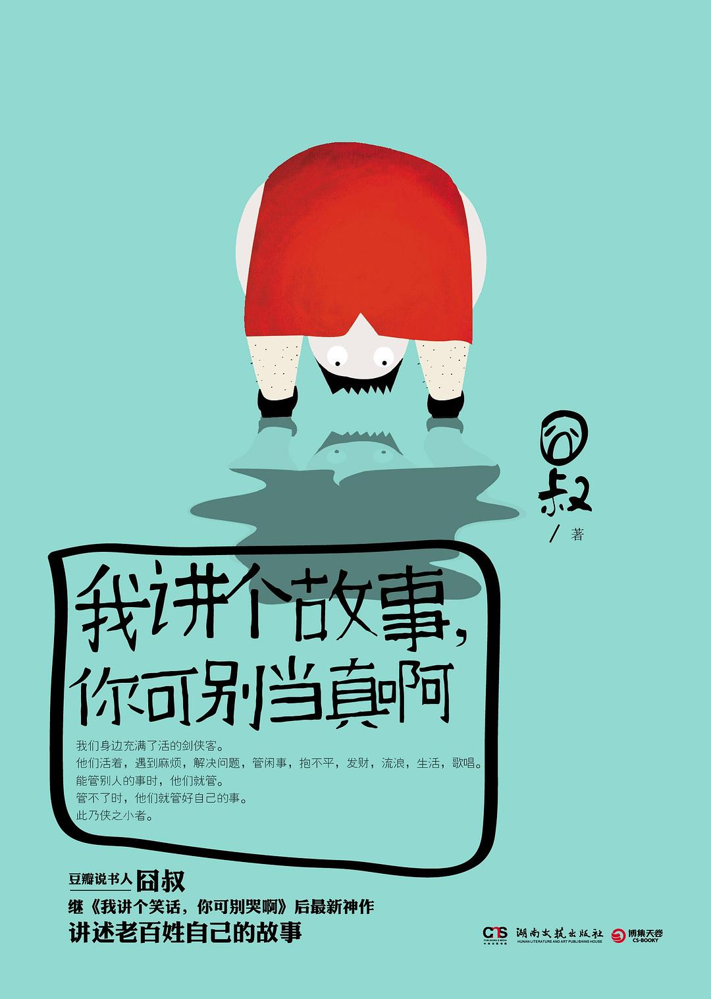

《我讲个故事，你可别当真啊》

8.2
★★★★☆
豆瓣评分 · 3,192 人评价
未标记阅读状态
豆瓣传奇故事讲述者囧叔以冷面幽默与市井奇谭笔法，记录当代都市边缘奇人异士的荒诞狂想与草根温情，在黑色幽默中托举平凡人的生活尊严。
总体观点
平庸琐碎的日常生活之下暗涌着奇异浪漫的精神奇迹；市井小人物以各自偏执狂热的方式与庸常世界周旋，构成了活色生香的当代民间传奇。
荒诞与真挚互为表里，看似玩世不恭的黑色幽默外壳下，包裹着作者对被时代列车抛落边缘个体的深切怜悯与敬意。
故事的真假从来不是丈量其价值的尺度，人在面对惨淡现实时依然愿意构筑童话狂想的精神气力，才是对抗虚无最温柔的武器。
核心观点
-
1. 市井偏执狂的英雄主义：在微小执念中成就至高信仰
故事中的人物往往对某件在常人看来微不足道甚至荒诞的事情倾注全部生命热情，由此在平庸世界中开辟出神圣的尊严领地。
‘捷达之王’冯如庸将一辆破旧捷达开得出神入化，哪怕在拥堵暴雨的立交桥下，也能用神乎其技的车技为素不相识的孕妇劈开生命通道。 -
2. 冷面滑稽下的温热悲悯：笑中带泪的底层叙事
囧叔从不居高临下地同情，而是用北京胡同式的调侃与自嘲消解苦难的沉重，让苦涩的人生在狡黠欢笑中长出草根的硬骨头。
‘计算之王’朱知碌心算天下万物成本，却唯独在计算母亲多年治病的账单时故意算错，用‘数学误差’掩盖隐忍的孝心。 -
3. 当代都市的边缘隐士：隐匿在弄堂深处的奇门遁甲
大都市的高楼大厦遮蔽了市井烟火，但那些看似寻常的修车匠、看门大爷、算命先生身上，保留着近乎古典武侠的义气与绝活。
‘鸟王’白泰昆精通百鸟之语，在城市旧城改造大拆迁前夜，率领百鸟盘旋老槐树上空为即将消逝的胡同唱响挽歌。 -
4. 血缘与代际的隐秘和解：父辈粗粝外表下的笨拙深情
通过对祖父、叔伯一辈的追忆，展现出老一辈工人阶级在时代转型巨变中的坚守、失落与对子侄后辈无言的重托。
在《爷爷的塔吊与炒饼》中，开了一辈子塔吊的老工人在钢铁云端俯瞰城市生长，在简陋工具箱里捂热一块带给孙子的油汪汪炒饼。 -
5. 狂想作为生存止痛剂：用故事给自己颁发人生锦旗
现实往往残酷干瘪，但人类之所以能够穿过漫长泥泞，全靠那些在深夜酒桌上吹出的牛皮与吹不灭的心灵火种。
作者在后记中坦言，每一篇看似荒诞不经的故事，都是给每一个在现实泥潭中奋力扑腾的普通人自制的一面人生锦旗。
树状思维导图
全书思维导图 · 知识脉络树
已复制思维导图大纲到剪贴板！
全书结构
-
第一卷：胡同神侠（偏执狂与异人志）
收录《狗王周骐圣》《捷达之王冯如庸》《计算之王朱知碌》；描摹北京城中身怀绝技却甘于市井的草莽英雄与偏执狂人。
周骐圣能听懂全北京胡同野狗的方言密语，以狗群为耳目巡视街巷，惩治偷鸡摸狗之徒，自成一方地下秩序守门人。 -
第二卷：草莽飞扬（异禽怪才与奇特因缘）
收录《鸟王白泰昆》《零度之王邱海恩》《一手遮天吴大拿》；讲述大杂院与立交桥下游走在法律与规训边缘的性情中人。
邱海恩在零下三十度的冷库中练就抗寒绝学，最终在冬夜救助昏迷路人的传奇救赎历程。 -
第三卷：少年旧事（流金岁月与懵懂成长）
收录《家庭作业田秫秸》《打火机与理发师》《天桥下的魔术大师》；以怀旧而略带感伤的笔触追溯九十年代童年少年时的荒唐成长与纯真友谊。
田秫秸为了帮全班同学对付刻薄老师的魔鬼作业，发明出一套惊天地泣鬼神的抄作业分工流水线。 -
第四卷：老辈苍茫（钢铁余温与长辈背影）
收录《爷爷的塔吊与炒饼》《二叔的大红旗》《老街最后的铁匠》；深情记录老国企工人与手艺人在工业化退潮时的尊严背影。
老塔吊司机在即将报废的机械顶峰坐看落日，那是老工业时代献给工人阶级最后的落日余晖。 -
终卷与后记：给自己做一面人生锦旗
收录作者后记与创作杂感；解释书名由来，剖析为何在这个一切都要被量化拆解的理性时代，我们依然拼命需要这些‘当不得真’的好故事。
作者写道：如果现实生活是一场漫长而难挨的硬仗，愿这些荒诞故事成为你疲惫夜晚怀里揣着的一壶热烈老白干。